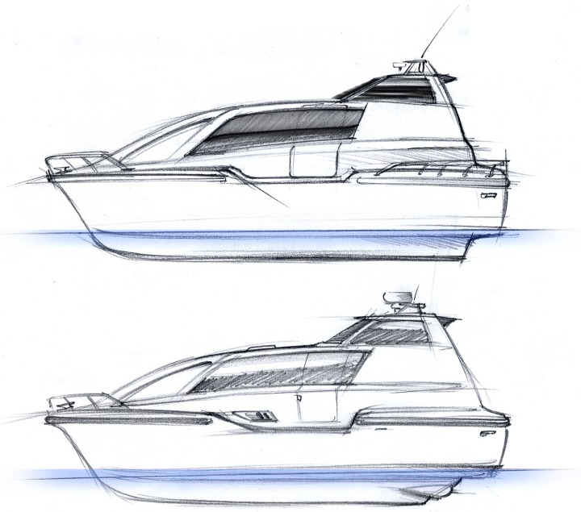

|
Zafer Uluçay, ZuluDesign: Biz sadece otomotiv sektöründe iþ yapmýyoruz. Ürün tasarýmý da yaptýðýmýz için bu makineleri de sergiliyoruz. Bu makineleri EKSEN firmasý için tasarladýk. Bu firma da bu ürünleri "Arçelik ve BEKO" adý altýnda bu firmalara verdi. Bu ürün 100 derecenin üstünde buhar püskürterek hijyen saðlýyor. Üstelik hiçbir temizlik maddesi kullanmadan temizlik yapmýþ oluyorsunuz. Bu temizliði en çok çocuk odasýnda, çocuðun oyuncaklarýnda kullanabiliyoruz. Bütün zemin döþemeleri, camlar, perdeler her türlü zemin için çok kullanýþlý bir alet. Araç temizliklerinde de kullanabiliyoruz. Yað lekeleri vs. çok kolay çýkartýlýyor. Motosiklet, bisiklet gibiaraçlarýn temizliðinde de kullanabiliyoruz...
Bu ürünün tasarým hakký Arçelik'e mi devredildi?
Zafer Uluçay: Bu ürünün tasarým hakký EKSEN Makine'de. EKSEN Makine için tasarlanmýþ bir ürün. EKSEN Makine ile Arçelik arasýnda olan bir iliþki doðrultusunda yön verilmiþ bir ürün. Özetle, pazarlamayý Arçelik üstlenmiþ durumda. Üretimini ve tasarýmýný EKSEN makine yapýyor.
T-Design Standý: Tasarýmcý Murat Armaðan ile yapýlan Röportaj:
T-Design ne zaman, nasýl kuruldu? Ekibiniz hangi özelliklere sahip?
Murat Armaðan: T-Design, teknoloji konulu tasarýmlar ve sistem tasarýmlarý üreterek ticari yenilikler getirmek, patent nitelikli hayatý kolaylaþtýran tasarýmlar üretmek, benzeri projeleri destekleyerek ticari deðer kazandýrmak amacýyla kurulmuþtur. Tasarým ve ürün geliþtirme hizmetlerindeki kurumsal yapýlarýn azlýðý ve önümüzdeki uluslararasý rekabet koþullarýnda, yeni ürün geliþtirme stratejilerinin firmalar için öneminin artmasý, T-Design tarafýndan potansiyel olarak görülmüþ ve hedef alanýný oluþturmuþtur. T-Design, farklý sektörlerdeki firmalarýn mevcut üretimlerinde ürün geliþtirme danýþmanlýðý yaparak ürünlerine deðer katmakta veya yeni ürünler geliþtirerek rekabet avantajý elde etmelerini saðlamaktadýr.
Üretici firmalarýn tasarým ihtiyaçlarýnýn tanýmlanmasý, ürün stratejilerinin anlaþýlmasý, üretim koþullarýnýn bilinmesi, ürün geliþtirme süreci için önceliklidir. T-Design araþtýrma sürecinde yer alan bu adýmlar, rakip ürünlerin performans analizi, kullanýcý alýþkanlýklarýnýn öðrenilmesi gibi araþtýrmalar ile desteklenerek iþ sürecinde uygulanacak modeli belirler. Model, ürün tasarýmý sürecinin her adýmýnda, edinimlerin ve bilgilerin doðru kullanýmý saðlayarak sonuca hýzlý ve güvenli biçimde yaklaþtýrýr.
Deniz Taksi Projesi nasýl doðdu?
Murat Armaðan: Deniz Taksi bizim periyodik olarak yaptýðýmýz workshoplardan birinde ortaya çýkmýþ bir fikir. Aslýnda Deniz Taksisi projesine sadece tekne tasarýmý olarak bakarsak çok dar bir açýdan bakmýþ oluruz;
Deniz Taksi'yi bir sistem olarak tasarladýk. Yönetim sistemleri, duraklar ve deniz taþýma aracý olarak üç bölüme ayýrdýk. Deniz taksinin yolcu taþýma iþlevine uygun olarak tasarým çalýþmalarý sürerken, yolcu iniþ biniþinin yapýlacaðý duraklar için güvenliðin ön planda olduðu çözümler üretmeye çalýþtýk. Bunun yanýnda da sistemin beyni olan "Yönetim ve Yönlendirme Sistemi"ni tasarladýk. Bu, çaðrý merkezi, coðrafi pozisyon belirleme (GPS), filo takibi ve yönlendirme gibi bir dizi teknolojiyi barýndýran sistem, yazýlým ve donaným alt yapýsý ile de uzun ve zahmetli bir iþ geliþtirme süreci aslýnda...
Ýlk kez Mart ayýnda denize indirdiðimiz prototip ile test çalýþmalarý devam ediyor. Bu prototipi Ýstanbul Tasarým Haftasý kapsamýndaki fuar alanýnda sergiliyoruz. Bu prototipin üretilmesi yaklaþýk altý aylýk bir süre aldý. Öncesinde 1.5 yýllýk bir mühendislik çalýþmasý söz konusu. Mühendislik çalýþmalarda doðal olarak CAD/CAM teknolojileri kullanýlarak yapýldý. Bilgisayar ortamýnda aracýn deniz üzerinde çeþitli deniz koþullarýndaki davranýþlarý simüle edildi ve özellikle alt gövdenin tasarýmý tamamen bilgisayar verilerinden yola çýkarak yapýldý. Biz çeþitli gövde tiplerinde denemeler yaptýk. Sonunda su üzeri hareketliliðe en iyi cevap veren katamaran gövdede karar kýldýk. Bilgisayar ortamýnda yaptýðýmýz ergonomik analizlerle yolcu yerleþimleri kullaným alanlarýný tasarlayarak bu gün prototipte gördüðünüz tasarým ortaya çýktý.
Proje ne kadar zamanýnýzý aldý?
Murat Armaðan: Proje 3,5 yýl sürdü. Ýlk bir yýlý tamamen araþtýrma ile geçti bunun paralelinde tasarým eskizleri de yapýlýyordu tabii bir çok el çizimi yapýldý. Þu anda proje bitmiþ sayýlmaz aslýnda. Þu sýralar yoðunlukla "Yönetim ve Yönlendirme Sistemi" üzerine çalýþýlýyor. Ayrýca uygulanacaðý her kente göre bu sistemin yapýsý farklýlaþýyor. Ayrýca farklý tasarým modelleri ve Deniz Taksi sistemine entegre edilebilecek diðer operasyonel deniz araçlarý üzerine çalýþýyoruz.

Dünya'da benzer uygulamalar var mý?
Murat Armaðan: Dünya da "Deniz Taksi Sistemine" benzer bir uygulama yok. Bunun sebebi teknolojik olarak bazý fonksiyonlarýn henüz uygulanabilir olmasý. Örneðin herhangi bir yerden sipariþ verebilmek için Mobil iletiþim araçlarýna ihtiyaç olmasý gibi. Bu sistem tasarýmý alanýnda bir ilktir. Eðer yurt dýþýndaki kýyý kentlerde uygulamaya baþlarsak. Sistem tasarým ihracatý, sistem kurulumu ve iþletmeciliði alanýnda bir ilki gerçekleþtirmiþ olacaðýz.
Sistemin en büyük avantajý hat ve saat baðýmsýz olarak bir deniz aracýný týpký bir kara taksisi gibi istediðiniz anda kullanabilme imkaný yaratmaktadýr. Ayrýca küçük ölçekte yolcu taþýma alanýnda son derece güvenli ve konforlu bir yolculuk saðlamaktadýr. Özellikle Ýstanbul gibi trafik sorunu olan ve iki yaka arasýndaki geliþlerin yoðun olduðu kentlerde tüm bölgede homojen bir taþýmacýlýk ortamý meydana getirmektedir.
Tasarým sürecinde hangi CAD yazýlýmlarýný kullandýnýz?
Murat Armaðan: Tekne gövde tasarýmý ve simülasyonlarda Autoship (www.autoship.com) kullanýldý. Durak sistemi ve birçok mekanik noktanýn çözümünde ise T-Design bünyesindeki projelerde standart olarak kullanýlan Pro/ENGINEER yazýlýmýndan yararlandýk.
|